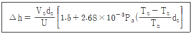
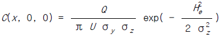
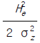
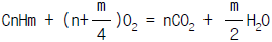
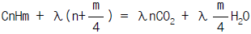
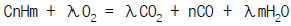
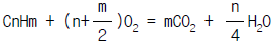
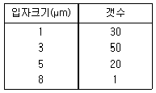
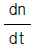

대기환경기사 (2003-03-16 기출문제)
1과목: 대기오염 개론
1. 다음 중 SO2가 주원인 물질로 작용한 대기 오염 피해사건이 아닌 것은?
- London Smog 사건
- Poza Rica 사건
- Donora 사건
- Meuse Vallley 사건
(정답률: 85%)

2. 오염물질과 그 발생원과의 관계가 가장 적은 것은?
- HF - 도장공업, 석유정제
- HCl - 소오다공업, 활성탄제조, 금속제련
- C6H6 - 포르마린제조
- Br2 - 염료, 의약품, 농약 제조
(정답률: 알수없음)
3. 염화수소 1V/V ppm에 상당하는 W/W ppm은? (단, 표준상태기준, 공기의 밀도는 1.293kg/m3 )
- 약 0.76
- 약 0.93
- 약 1.26
- 약 1.64
(정답률: 알수없음)
4. 질소산화물에 대한 다음의 설명 중 맞는 것은?
- 연소열에 의해서 생성되는 NOX는 고온 NOX와 저온 NOX로 나뉜다.
- 질소산화물 그 자체는 독성이 없으나 대기중에서 탄화수소와 반응하여 오존을 발생시켜 이것이 독성을 나타낸다.
- 질소산화물은 적외선의 작용에 의해서 탄화수소와 반응하여 광화학 스모그를 발생시키는 원인이 된다.
- 자연적인 NOX방출량은 인위적인 NOX방출량보다 많다.
(정답률: 39%)
5. 세계보건기구(WHO)가 환경기준의 수준을 설명하고 있는 내용과 가장 거리가 먼 것은?
- 바람직한 수준
- 수용수준
- 최대허용수준
- 위험수준
(정답률: 17%)
6. 1-2㎛ 이하의 미세입자에서 세정(Rain out) 효과가 적은 이유로 가장 타당한 것은?
- 응축효과가 크기 때문에
- 브라운 운동을 하기 때문에
- 휘산효과가 크기 때문에
- 입자가 부정형이 많기 때문에
(정답률: 알수없음)
7. '수용모델'에 관한 설명으로 알맞지 않는 것은?
- 지형,지상학적 정보없이도 사용 가능하다.
- 수용체 입장에서 영향평가가 현실적으로 이루어질 수 있다.
- 현재나 과거에 일어났던 일을 추정,미래를 위한 전략을 세울 수 있다.
- 입력자료로 적용하여 미래의 대기질을 예측하기가 용이하다.
(정답률: 25%)
8. 굴뚝에서 발생하는 원추형(coning)의 연기 모양과 대기 조건에 관한 설명으로 틀린 것은?
- 오염의 단면분포가 전형적인 가우시안분포를 이루고 있다.
- 날씨가 흐리고 바람이 비교적 약하면 약한 난류가 발생하여 생긴다.
- 대기가 중립조건일 때 발생한다.
- 아침과 새벽에 잘 발생하며 역전층이 해소되는 과정에서 형성된다.
(정답률: 알수없음)
9. 화력발전소에서 굴뚝높이가 50m이고, 배출연기온도가 200℃, 배출연기속도가 30 m/s, 굴뚝내경이 2m이다. 이 때에 주변 대기온도가 20℃이고, 굴뚝 배출구에서 대기 풍속이 5m/s이며, 대기압은 1000 mb이다. 위의 조건에서 다음 Holland식을 이용한 연기의 유효굴뚝높이는?

- 42m
- 58m
- 93m
- 108m
(정답률: 34%)
10. 유효굴뚝높이가 120m이고, SO2의 배출량이 20g/s인 화력 발전소가 있다. 굴뚝배출구에서 대기풍속이 5m/s일 때에 굴뚝으로부터 풍하지역으로 3km 떨어진 곳에서 SO2의 농도는? (단, C(x, 0, 0) =

exp( -
)이고 σy는 250m이고, σz은 140m이다.)- 15 ㎍/m3
- 20 ㎍/m3
- 25 ㎍/m3
- 30 ㎍/m3
(정답률: 알수없음)
11. 오존층에 대한 설명으로 적절치 못한 것은?
- 성층권의 중· 하층의 고도인 고도 20-30km 범위를 오존층이라고 한다.
- 오존 농도의 고도분포는 지상 약 30km의 고도에서 평균 약 1000ppm의 오존농도를 나타낸다.
- 오존층에서 산소분자는 태양광선 중에서 240nm이하의 자외선을 흡수하여 2개의 산소원자로 해리된다.
- 오존층에서 오존은 자외선을 흡수하면 광해리를 일으켜 산소원자와 산소분자로 분열한다.
(정답률: 60%)
12. '라돈'에 관한 설명으로 틀린 것은?
- 일반적으로 인체의 조혈기능 및 중추신경계통에 영향을 미치는 것으로 알려져 있다.
- 무색,무취의 기체로 액화되어도 색을 띠지 않는 물질이다.
- 공기보다 9배나 무거워 지표에 가깝게 존재한다.
- 주로 건축자재를 통하여 인체에 영향을 미치고 있으며 화학적으로 거의 반응을 일으키지 않는다.
(정답률: 64%)
13. 대기오염물질 중에서 대기중의 체류시간이 긴 순서대로 나열된 것은?
- NO2 ＞ SO2 ＞ CO ＞ CH4
- N2 ＞ CH4 ＞ CO ＞ SO2
- CO ＞ N2 ＞ SO2 ＞ CH4
- O2 ＞ N2 ＞ CH4 ＞ CO
(정답률: 알수없음)
14. 실내공기오염의 지표가 되는 물질은?
- 아황산가스(SO2)
- 이산화질소(NO2)
- 일산화탄소(CO)
- 이산화탄소(CO2)
(정답률: 알수없음)
15. 분진농도가 120㎍/m3이고, 상대습도가 70%인 상태의 대도시에서 가시거리는 몇 km인가? (단, 상수 A = 1.2)
- 5
- 10
- 15
- 20
(정답률: 알수없음)
16. 연기의 배출속도가 60m/sec, 평균 풍속이 300m/min인 경우 굴뚝의 유효높이를 35m 증가시키면 굴뚝의 직경크기 (m)는 얼마인가) ?단, Δ H=1.5× (VS/U)× D 이다.)
- 1.25
- 1.66
- 1.94
- 2.62
(정답률: 37%)
17. 오존층 보호를 위한 국제협약으로만 연결된 것은?
- 바젤협약 - 비엔나 협약 - 몬트리올 의정서
- 리우회의 - 런던회의 - 비엔나 협약
- 비엔나 협약 - 런던회의 - 몬트리올 의정서
- 바젤협약 - 런던회의 - 비엔나 협약
(정답률: 알수없음)
18. 굴뚝 배출가스 중의 플루오르 농도를 측정한 결과 50ppm이었다. 플루오르화합물의 배출허용농도가 플루오르로 환산하여 10㎎/m3이라면 감소시켜야 할 플루오르의 양(㎎/Sm3)은? (단, 플루오르의 원자량은 19 이다.)
- 약 18 ㎎/Sm3
- 약 32 ㎎/Sm3
- 약 48 ㎎/Sm3
- 약 52 ㎎/Sm3
(정답률: 알수없음)
19. 대기의 운동과 관련된 바람에 대한 설명으로 틀린 것은?
- 바람에 관여하는 힘은 기압경도력, 전향력, 원심력, 마찰력이다.
- 기압경도력은 연직성분과 수평성분으로 나누어지고, 기압은 고도에 따라 감소한다.
- 코리올리힘은 북반구에서 오른쪽 직각으로 작용하며, 운동의 방향만을 변화시키고 속도에는 아무런 영향을 미치지 않는다.
- 원심력은 곡선의 바깥쪽으로 향하는 힘으로 극지방에서 최대이고 적도에서 제로(0)이며, 마찰력은 지표에서 풍속에 반비례하고 진행방향에 반대로 작용한다
(정답률: 알수없음)
20. 1시간에 20,000대의 차량이 고속도로 위에서 평균시속 80km로 주행하며, 차량 1대당 평균탄화수소 배출율은 0.02g/s이다. 바람이 고속도로와 측면 수직방향으로 5m/s로 불고 있다면 도로지반과 같은 높이의 평탄한 지형의 풍하 500m 지점에서의 지상오염농도는? (단, 이때의 대기는 중립상태이며, 거리 500m에서의 σz =15m이고 농도 C=(2Q/(√2π σz U) 이다.)
- 5.3× 10-5g/m3
- 6.4× 10-2g/m3
- 7.5× 10-5g/m3
- 8.6× 10-2g/m3
(정답률: 알수없음)
2과목: 연소공학
21. 연소반응에서의 반응속도에 관한 설명으로 틀린 것은?
- 화학반응식의 비례상수(K)는 반응물 농도에 따라 결정된다.
- 화학반응율은 통상 반응물이 사라지는 율이나 생성되는 율의 항으로 표현된다.
- 비가역 단분자형 1차반응의 반응속도는 반응물의 농도에 정비례한다.
- 비가역 단분자형 0차반응의 반응속도는 반응물의 농도에 관계가 없다.
(정답률: 16%)
22. 탄소 85%,수소 13%,황 2%인 중유의 연소에 필요한 이론 공기량(Sm3/㎏)은?
- 5.6
- 7.1
- 8.8
- 11.1
(정답률: 42%)
23. 굴뚝의 통풍에 관한 설명으로 잘못된 것은?
- 굴뚝 자체에 의한 통풍을 자연통풍이라고 한다.
- 흡인통풍의 경우 통상 로내는 부압(-)이 된다.
- 굴뚝 내부의 가스온도가 높을수록 통풍력은 커진다.
- 굴뚝의 높이가 2배가 되면 통풍력은 √2 배가 된다.
(정답률: 알수없음)
24. 연소가스중의 수분을 측정하였더니 건조가스 1Sm3당 100g이었다. 건조가스에 대한 수증기의 용량비는? (단,Sm3 수증기/Sm3 건조가스)
- 12.4%
- 18.5%
- 20.4%
- 22.4%
(정답률: 40%)
25. 어느 석탄을 사용하여 가열로의 배기 가스를 분석한 결과 CO2 15%, O2 6%, N2 79% 였다. 이 경우의 공기비는? (단, 연료중 질소성분은 무시하며, 완전연소라 가정한다)
- 1.4
- 1.6
- 1.8
- 2.0
(정답률: 알수없음)
26. 메탄가스의 고발열량이 9000[kcal/Sm3]이라면 저발열량[kcal/Sm3]은?
- 8040
- 7800
- 7540
- 7200
(정답률: 62%)
27. 어떤 가스의 조성을 조사하니 H2, CO, CH4, N2 및 O2가 각각 부피분율로 30%, 6%, 40%, 20%, 4%로 나왔다. 이 가스를 완전 연소하기 위한 이론공기량(Sm3/Sm3)은?
- 4.48
- 6.96
- 8.54
- 12.42
(정답률: 알수없음)
28. 탄소와 수소만으로 되어 있는 탄화수소를 이론 산소량으로 연소시킬 때의 연소반응식으로써 옳은 것은? (단,λ = 과잉공기율)




(정답률: 알수없음)
29. 다음중 표면연소의 설명으로 가장 적절한 것은?
- 오일의 표면에서 오일이 기화하여 일어나는 연소
- 화염의 표면에서 산소와의 결합으로 일어나는 연소
- 적열 코크스나 숯의 표면에 산소가 접촉하여 일어나는 연소
- 고체연료가 화염을 정상적으로 내면서 연소하는 것
(정답률: 알수없음)
30. 1Sm3당의 무게가 1.34㎏인 탄화수소는?
- CH4
- C2H6
- C3H6
- C3H8
(정답률: 알수없음)
31. 프로판(C3H8)과 에탄(C2H6)의 혼합가스 1 Nm3를 완전연소시킨 결과 배기가스중 이산화탄소(CO2) 생성량이 2.8 Nm3 이었다. 혼합가스중의 프로판과 에탄의 mole비(C3H8/C2H6)는?
- 3.0
- 3.5
- 4.0
- 4.5
(정답률: 30%)
32. 유류연소 버너에 관한 설명으로 틀린 것은?
- 유압식버너: 넓은 각도의 화염으로 조절범위가 좁다
- 회전식버너: 비교적 넓은 각도의 화염으로 회전수는 5000-6000rpm, 분무각도는 40-60° 가 적당하다.
- 고압공기식(gun type): 가장 좁은 각도의 긴 화염이며 분무각도는 30° 정도이다.
- 저압공기식 : 비교적 좁은 각도의 짧은 화염이며 용량은 2000-3000L/hr로 대형 가열로형이다.
(정답률: 알수없음)
33. 액화석유가스의 구성성분과 가장 거리가 먼 것은?
- C3H8
- C4H8
- C4H10
- C5H10
(정답률: 알수없음)
34. 생성엔탈피(△Hf°: kJ/mol)에 관한 설명으로 가장 거리가 먼 것은?
- 발열반응일 때 음수(-)값을 갖는다.
- 표준압력(l atm)에서 측정한다.
- 화합물의 생성열이란 화합물의 구성원소로 부터 화합물로 형성될 때 발생 또는 흡수하는 열의 량을 의미한다.
- C, H2, O2의 생성엔탈피는 반응형태(흡열 또는 발열)에 따라 다르다.
(정답률: 24%)
35. CO2 max=18.4%, CO2=14.2%, CO=4%에서 연소가스중의 O2는 몇 % 인가?
- 1.61%
- 1.71%
- 1.81%
- 1.91%
(정답률: 알수없음)
36. 메탄(CH4 ) 1.0Sm3을 연소한다. 이때 발생되는 이론습연소 가스량(Sm3/Sm3)은?
- 4.37
- 6.36
- 8.45
- 10.52
(정답률: 알수없음)
37. 매연발생에 관한 설명으로 틀린 것은?
- 분해가 쉽거나 산화하기 쉬운 탄화수소는 매연발생이 적다.
- 탈수소, 중합 및 고리화합물 생성등과 같은 반응이 일어나기 쉬운 탄화수소일수록 매연발생이 적다.
- -C-C-의 탄소결합을 절단하기보다는 탈수소가 쉬운 쪽이 매연이 생기기 쉽다.
- 연료의 C/H의 비율이 클수록 매연이 생기기 쉽다.
(정답률: 알수없음)
38. 2%의 황분을 함유한 석탄 1.5ton를 완전연소하면 표준상태에서 약 몇 Sm3의 아황산가스가 발생하겠는가? (단, 모든 황분은 아황산가스만을 생성한다.)
- 32
- 21
- 16
- 10
(정답률: 46%)
39. 액화석유가스(LPG)에 대한 설명 중 틀린 것은?
- 황분이 적고 독성이 없다.
- 사용에 편리한 기체연료의 특징과 수송 및 저장에 편리한 액체연료의 특징을 겸비하고 있다.
- 액체에서 기체로 될 때 증발열 600-800kcal/kg이 발생하며 이에 따라 발열량이 높아진다.
- 비중이 공기보다 무거워 누출될 경우 낮은 곳에 체류 하여 인화되기 쉽다.
(정답률: 알수없음)
40. 연소장치에서 생성되는 질소산화물에 관한 사항들 중 가장 정확하게 표기된 항은?
- 연소장치내의 연소부에서 생성되는 질소산화물의 형태는 주로 NO2이다.
- 질소산화물의 발생량을 적게하기 위해서는 노내의 온도를 높게 유지하는 것이 유리하다.
- 생성되는 질소산화물의 형태는 주로 NO와 NO2이고 굴뚝에서는 NO가 많이 검출된다.
- 공기를 이론량보다 20% 가량 과량으로 공급함으로서 질소산화물의 생성을 억제할 수 있다.
(정답률: 알수없음)
3과목: 대기오염 방지기술
41. 다음은 악취물질의 처리방법에 대한 설명이다. 그 내용이 잘못된 것은?
- 통풍 및 희석은 높은 굴뚝을 통해 방출시켜 대기중에 분산 희석 시키는 방법이다.
- 흡착에 의한 악취물질의 처리에는 주로 물리적 흡착이 이용된다.
- 응축법에 의한 처리는 냄새를 가진 가스를 냉각응축 시키는 처리법으로 유기용제를 비교적 고농도 함유한 배기가스에 적용된다.
- 촉매산화법은 백금이나 금속산화물등의 산화촉매를 이용하여 60-80℃의 저온에서 산화 처리한다.
(정답률: 알수없음)
42. 유체가 관로를 흐를 때 발생되는 압력 손실에 대한 설명으로 알맞지 않은 것은?
- 관의 내경에 반비례한다.
- 관의 길이에 비례한다.
- 유체의 유속 제곱에 비례한다.
- 유체의 밀도에 반비례한다.
(정답률: 17%)
43. 배출가스 0.4m3/sec를 폭 5m, 높이 0.2m, 길이 10m 의 침강집진으로 집진 제거한다면 처리가스내의 입경 10㎛ 분진의 침강효율은? (단, 분진밀도: 1.10g/cm3, 배출가스밀도: 1.2kg/m3, 처리가스점도:1.84× 10-4g/cm.sec, 수평침강실의 수는 1, 보정계수:1.0, 층류영역이라 가정함)
- 약 10%
- 약 20%
- 약 30%
- 약 40%
(정답률: 17%)
44. 펄스젯 여과집진기의 경우 여과포 상단에서 압축공기를 불어넣어 여과포 외피에 부착된 분진을 제거하게 된다. 그러나 압축공기의 힘이 여과포 하단까지 도달하려면 여과포를 통과하여 외부로 빠지는 압축공기량을 조절하여 주어야 한다. 이장치의 이름은 무엇인가?
- diffuser tube
- bag cage
- solenoid valve
- cyclic timer
(정답률: 알수없음)
45. 중유의 탈황 방법인 접촉 수소화 탈황법에는 직접 탈황법 간접탈황법, 중간탈황법이 있다. 탈황이 이루어지는 반응 온도의 범위로 가장 알맞는 것은?
- 170-220℃
- 230-340℃
- 350-420℃
- 430-550℃
(정답률: 30%)
46. 유해가스 방지 및 처리공정이 잘못 짝지어진 것은?
- 불화수소(HF)- 산화철 침전법
- 염화수소- 수세법
- 불소(F2)- 가성소다에 의한 흡수법
- 황화수소- 중화법 및 산화법(알카리 흡수법)
(정답률: 알수없음)
47. 벤츄리 스크러버(Venturi Scrubber)에 대한 설명 중 잘못된 것은?
- 액체방울(Liquid droplet)과 입자의 주된 접촉메카니즘은 충돌(impaction)이다.
- 물방울입경과 먼지입경의 비는 충돌 효율면에서 1 : 1.5 - 1 : 3.0 이 좋다.
- 가스압력손실이 크므로 동력비가 크다.
- 소형으로 대용량의 가스처리가 된다
(정답률: 알수없음)
48. 상온에서 물에 대한 용해도의 순위가 옳은 것은?
- HCl ＞ HF ＞ SO2 ＞ O2
- HCl ＞ SO2 ＞ HF ＞ O2
- SO2 ＞ HCl ＞ Cl2 ＞ O2
- SO2 ＞ HCl ＞ HF ＞ O2
(정답률: 10%)
49. 용접작업,도금작업등 비교적 조용한 대기중에 저속도로 비산하는 경우,후드의 적절한 제어속도는?
- 0.25 - 0.5m/sec
- 0.5 - 1.0m/sec
- 1.0 - 2.5m/sec
- 2.5 - 5.0m/sec
(정답률: 알수없음)
50. 관성력 집진장치에서 집진율을 높게 하기위한 설명 중 틀린 것은?
- 출구의 가스속도가 작을수록 좋다.
- 기류의 방향전환 회수는 많을수록 좋다.
- 기류의 방향전환 각도가 클수록 좋다.
- 적당한 dust box의 형상과 크기가 필요하다.
(정답률: 10%)
51. 환기장치의 닥트(duct)에서 유체(fluid)의 정압(static pressure)과 속도압(velocity pressure)에 대한 설명중 잘못 된것은?
- 유동상태 공기의 정압은 기류의 수평방향으로만 작용
- 대기압에 대하여 정압은 송풍기(fan)의 상류(upstream)에서 ″ －″ (negative)
- 공기의 속도압은 기류(air flow)의 방향으로만 작용
- 공기의 속도압은 항상 ″ +″ (positive)
(정답률: 알수없음)
52. 황 함유량이 2%인 중유를 20t/hr로 연소하는 보일러에서 배기가스를 NaOH수용액으로 처리한 후, 황성분을 Na2SO3로 회수할 경우 필요한 NaOH의 이론량은?
- 400㎏/hr
- 500㎏/hr
- 800㎏/hr
- 1,000㎏/hr
(정답률: 알수없음)
53. 아래의 구형입자 크기 분포에 대하여 평균갯수를 갖는 입자의 직경(count mean diameter)은?

- 2.85 μ m
- 3.00 μ m
- 4.00 μ m
- 4.25 μ m
(정답률: 알수없음)
54. 흡착이란 유체로 부터 기체(또는 액체)성분을 어떤 고체상 물질에 의해 선택적으로 제거할 수 있는 분리공정이다 다음 중 흡착법이 유용한 경우와 가장 거리가 먼 것은?
- 기체상 오염물질이 비연소성이거나 태우기 어려운 경우
- 오염 물질의 회수가치가 충분한 경우
- 분자량이 큰 고분자 입자로서 용해도가 높은 경우
- 배기내의 오염물 농도가 대단히 낮은 경우
(정답률: 46%)
55. 초기 입자농도가 107(particles/㎝3)인 함진배기에서 다음의 속도식에 의해 입자의 응집(coagulation)이 일어난다.

=-kn2, 여기서 n = 입자농도(입자수/㎝3), t=시간, k=속도상수(2x10-10 ㎝3/sec). 이 함진배기에서의 입자농도가 초기 입자농도의 절반이 되기까지의 소요시간은?- 5.33분
- 6.33분
- 7.33분
- 8.33분
(정답률: 알수없음)
56. 유체의 운동을 결정하는 점도(viscosity)에 대한 설명이다. 바르게 나타낸 것은?
- 온도가 증가하면 대개 액체의 점도는 증가한다.
- 온도가 감소하면 대개 기체의 점도는 증가한다.
- 유체의 점도는 유체가 흐를 때 마찰저항을 일으킨다.
- 기체인 경우 분자간 응력이 점도에 가장 중요한 인자이다.
(정답률: 37%)
57. 유해가스로 오염된 가연성물질을 처리하는데 연소방법을 선택하고자 한다. 반응속도가 빠르고 온도를 낮출 수 있어 NOx의 발생이 가장 적은 처리 방법은?
- 직접연소법
- 예열산화법
- 촉매산화법
- 가열연소법
(정답률: 37%)
58. 350mL의 공간내에 있는 구형입자들의 총질량이 20㎎이다. 입자들의 직경이 0.4μ m (micrometer)이고 밀도가 1g/㎝3일 때 이 공간에 포함되어 있는 입자의 갯수는?
- 6x109
- 6x1010
- 6x1011
- 6x1012
(정답률: 25%)
59. 원심력집진장치는 입경에 따라 집진효율이 많이 변하므로 이 장치에 의해 제거되는 분진과 제거되지 않는 분진의 크기 구별이 정확하지 않다. 따라서 분리경(cut size)을 고안하여 사용하는데 이것에 대한 설명으로 타당한 것은?
- 90% 집진효율로 제거되는 최소 입자의 크기
- 60% 집진효율로 제거되는 입자의 크기
- 50% 집진효율로 제거되는 입자의 크기
- 25% 집진효율로 제거되는 최소 입자의 크기
(정답률: 알수없음)
60. 대기유해물질인 질소산화물에 관한 설명으로 알맞지 않은 것은?
- 배기가스를 재순환하여 가스의 완전연소를 유도하여 NOX를 억제할 수 있으나 실질적 효과는 적다.
- 주로 연소과정에서 연료 및 공기중의 질소가 산화되어 발생한다
- 연소용 공기의 과잉공급량을 약 10% 이내로 줄임으로써 질소산화물의 생성을 억제할 수 있다.
- 연소로에서 주위 표면으로 부터 열 전달을 효과적으로 촉진시켜 화염온도를 낮춤으로써 질소산화물을 줄일 수 있다.
(정답률: 알수없음)
4과목: 대기오염 공정시험기준(방법)
61. 건조 배출가스의 유량을 계산하는데 필요치 않은 것은?
- 배출가스 수분량
- 굴뚝의 단면적
- 배출가스 온도
- 흡인노즐 내경
(정답률: 알수없음)
62. 다음중 비분산적외선 분석법에 대한 설명으로 틀린 것은?
- 비교가스는 시료셀에서 적외선 흡수를 측정하는 경우 대조가스로 사용하는 것으로 적외선을 흡수하지 않는 가스를 말한다.
- 비교셀은 시료셀과 동일한 모양을 가지며 일정농도의 시료성분의 기체를 봉입하여 시료가스와 비교하는데 사용한다.
- 광원은 원칙적으로 니크롬선 또는 탄화규소의 저항체에 전류를 흘려 가열한 것을 사용한다.
- 시료셀은 시료가스가 흐르는 상태에서 양단의 창을 통해 시료광속이 통과하는 구조를 갖는다.
(정답률: 10%)
63. 온도의 표시에 관한 설명중 틀린 것은?
- 냉후(식힌 후)라 표시되어 있을 때는 보온 또는 가열 후 실온까지 냉각된 상태를 뜻한다.
- 표준온도는 0℃, 상온 15-25℃, 실온 1-35℃ 이다.
- 찬곳은 따로 규정이 없는 한 0-4℃를 뜻한다.
- 냉수는 15℃ 이하를 뜻한다.
(정답률: 46%)
64. 굴뚝, 덕트 등을 통하여 대기 중에 방출되는 가스상 물질을 분석하기 위해 시료를 채취할 때 주의하여야 할 사항중 틀린 것은?
- 채취에 종사하는 사람은 보통 2인 이상을 1조로 한다
- 옥외작업시 바람방향을 확인, 바람이 부는 쪽에서 작업하는 것이 좋다.
- 채취위치 주변에 배전, 급수설비는 배제하는 것이 좋다.
- 굴뚝내의 압력이 극도로 부압(-300㎜H2O 정도 이하)인 경우에는, 시료 채취용 굴뚝을 부설하여 용량이 큰 펌프로 시료가스를 흡인하며 그 부설한 굴뚝에 채취구를 만든다.
(정답률: 알수없음)
65. 아연환원 나프틸에틸렌 디아민법에 의해 배출가스중의 질소산화물을 분석할 경우 질산이온의 환원에 사용되는 시약은?
- 분말질산아연
- 분말금속아연
- 분말황산아연
- 분말산화아연
(정답률: 알수없음)
66. 로우 볼륨 에어 샘플러 (Low Volume Air Sampler)법을 이용하여 대기중 부유하고 있는 입자성 물질을 포집시 일반적인 포집입자의 입경기준은?
- 1㎛ 이하
- 5㎛ 이하
- 10㎛ 이하
- 50㎛ 이하
(정답률: 알수없음)
67. 환경대기중의 석면농도 측정에 관한 내용중 알맞지 않은 것은?
- 석면먼지 농도표시는 표준상태의 기체 1mL 중에 포함된 석면섬유의 개수로 나타낸다.
- 멤브레인 필터는 셀룰로오스 에스테르를 원료로 한 얇은 다공성막으로 구멍지름은 평균 0.01-10㎛의 것이 있다.
- 맴브레인 필터를 광굴절률 1.5 전후의 휘발성 용액에 담그면 투명도가 사라져 입자계수가 쉽다.
- 석면섬유의 광굴절률도 거의 1.5 정도이므로 보통 현미경으로는 식별하기 어렵다.
(정답률: 10%)
68. 다음 중 공정시험방법에서 정하는 환경 대기 중의 아황산가스 측정법이 아닌 것은?
- 산정량 수동법
- 용액 전도율법
- 적외선 분석법
- 자외선 형광법
(정답률: 20%)
69. 중유전용 보일러에서 건식가스메타를 이용한 장치로 수분을 채취하였다. 이 때 U자관 흡습수분량은 0.0628g이고, 흡인가스량은 2ℓ , 흡인가스온도는 25℃, 압력차는 없고, 대기압은 760mmHg이었다. 이 때의 배기가스 중의 수증기 부피백분율(%)은 얼마인가?
- 2.04%
- 4.08%
- 8.16%
- 16.32%
(정답률: 알수없음)
70. 다음중 원자흡광광도법으로 측정하기 위해 가장 먼저하여야 하는 조작은?
- 분광기의 파장눈금을 분석선의 파장에 맞춘다.
- 가스유량 조절기의 밸브를 열어 불꽃을 점화하여 유량조절 밸브로 가연성가스와 조연성가스의 유량을 조절한다.
- 가연성가스 및 조연성가스 용기가 각각 가스유량 조정기를 통하여 버어너에 파이프로 연결되어 있는 가를 확인한다.
- 광원램프를 점등하여 적당한 전류값을 설정한다.
(정답률: 알수없음)
71. 흡광광도법에 의해 배출가스 중의 이황화탄소를 측정할 때 사용하는 흡수액은?
- 디에틸아민동 용액
- 디에틸디티오카바민산나트륨 용액
- 디에틸아민산나트륨 용액
- 디에틸아민염산염 용액
(정답률: 알수없음)
72. N/100 초산바륨을 새로 조제하여 다음과 같이 표정하였을 때 N/100 초산바륨의 factor는? (단, N/250 H2SO4사용량:10㎖, N/250 H2SO4 factor:1.000, 적정에 사용한 N/100 초산바륨량 : 4.1㎖.)
- 0.9567
- 0.9756
- 1.0433
- 1.0250
(정답률: 알수없음)
73. 링겔만 농도표에 의한 매연의 농도를 측정시 연도 배출구에서 몇 cm 떨어진 곳의 농도와 비교하는가?
- 10∼30cm
- 15∼30cm
- 30∼45cm
- 45∼60cm
(정답률: 50%)
74. 시안화 수소 표준용액을 만들기 위하여 KCN 2.5g을 물에 녹여 1ℓ 로 하였다. 이 용액을 표정하는데 사용되는 적정액은?
- P - 디메틸아미노벤지리덴로다닌의 아세톤용액
- N/10 AgNO3용액
- N/10 설파민산
- N/10 NaOH 용액
(정답률: 알수없음)
75. 환경대기중의 일산화탄소를 수소염이온화 검출기법으로 측정할 때의 원리로서 옳게 설명된 것은?
- 시료를 운반가스인 몰레큘러 시브 촉매가 채워진 분리관을 통과시키면 분리된 일산화탄소가 니켈촉매에 의해 메탄으로 환원되고 이를 FID법으로 측정
- 시료를 수소불꽃중에서 연소시키면 탄화수소가 발생하며 이를 FID법으로 측정
- 시료를 수소불꽃중에서 연소시켜 일산화탄소를 이산화탄소로 산화시켜 이를 FID법으로 측정
- 시료를 산화시켜 탄산가스로 하고 이를 적외선 분석법에 의해 측정
(정답률: 알수없음)
76. 배출허용기준중 표준산소농도를 적용받는 항목에 대한 배출가스량 보정식으로 알맞는 것은) ?단, Q:배출가스유량(Sm3/일), Qa:실측배출가스유량(Sm3/일), Oa:실측산소농도(%), Os:표준산소농도(%) )
- Q = Qa × [(21-Os)/(21-Oa)]
- Q = Qa ÷ [(21-Os)/(21-Oa)]
- Q = Qa × [(21+Os)/(21+Oa)]
- Q = Qa ÷ [(21+Os)/(21+Oa)]
(정답률: 알수없음)
77. 배출가스 중의 불소화합물 분석법에 관한 설명이다. 잘못 설명된 것은?
- 흡광광도법은 용량법보다 높은 농도의 불화수소의분석에 적용된다.
- 시료가스채취관은 불소수지관, 스테인레스강관, 구리관 등이 사용된다.
- 흡수액은 N/10 수산화나트륨 용액을 사용한다.
- 시료 채취관은 굴뚝과 직각으로 접속하고 시료 채취관의 앞끝을 굴뚝의 중앙부까지 넣고 흡수병까지의 거리는 될 수 있는 대로 짧게 한다.
(정답률: 알수없음)
78. 하이볼륨에어샘플러에 의해 포집된 비산먼지의 농도를 계산하려고 한다. 풍속이 0.5m/sec 미만 또는 10m/sec 이상되는 시간이 전 채취시간의 50% 이상일 때 풍속보정 계수는?
- 1.0
- 1.2
- 1.4
- 1.5
(정답률: 알수없음)
79. 도관내를 흐르는 가스의 유압을 피토우관으로 측정하니 동압이 10mmH2O, 유속이 15m/sec였다. 이때 도관밸브를 완전히 열어 동압을 측정하니 20mmH2O로 되었다. 이 때 이 도관내의 유속은?
- 약 11m/sec
- 약 14m/sec
- 약 18m/sec
- 약 21m/sec
(정답률: 알수없음)
80. 이온크로마토그래피법에서 사용되는 '써프렛서'에 관한 설명으로 알맞지 않은 것은?
- 용리액으로 사용되는 전해질 성분을 분리검출 하기 위하여 분리관 앞에 병렬로 접속시킨다.
- 관형과 이온교환막형이 있다.
- 전해질을 물 또는 저 전도도의 용매로 바꿔줌으로써 전기 전도도 셀에서 목적이온 성분과 전도도만을 고감도로 검출할 수 있게 해준다.
- 관형써프렛서중 음이온에는 스티롤계 강산형(H+)수지가 충진된 것을 사용한다.
(정답률: 알수없음)
5과목: 대기환경관계법규
81. 대기오염물질 배출시설 기준으로 적절치 못한것은?
- 소각능력이 시간당 25㎏ 이상의 적축물 소각시설
- 소각능력이 시간당 25㎏ 이상의 폐기물 소각시설
- 소각능력이 시간당 25㎏ 이상의 폐가스 소각시설
- 소각능력이 시간당 25㎏ 이상의 폐수 소각시설
(정답률: 알수없음)
82. 일일 오염물질 배출량 및 일일 유량의 산정방법에 관한 설명으로 틀린 것은?
- 일일유량 산정을 위한 측정유량의 단위는 'm3/일'로 한다
- 일일유량 산정을 위한 일일 조업 시간은 측정하기 전 최근 조업한 30일간의 배출시설의 조업시간의 평균치로서 시간으로 표시한다
- 배출허용 기준초과 일일 오염물질 배출량 산정시 먼지외 오염물질의 배출농도의 단위는 ppm으로 한다
- 특정 유해 물질의 배출허용 기준초과 일일 오염물질 배출량은 소수점이하 넷째자리까지 계산한다
(정답률: 28%)
83. '과징금'처분에 관한 설명으로 틀린 것은?
- 과징금을 부과하는 위반행위의 종별,정도등에 따른 부과금의 금액 기타 필요한 사항은 환경부령으로 정한다
- 환경부장관은 사업자가 과징금을 납부기한까지 납부하지 아니하는 때에는 국세청장으로 하여금 국세체납 처분의 예에 의하여 이를 징수하도록 한다
- 징수한 과징금은 환경개선특별회계법에 의한 환경 개선특별회계의 세입으로 한다
- 과징금으로 부과될 수 있는 최대액수는 2억원 이다
(정답률: 10%)
84. 대기오염경보단계별 오염물질의 농도기준에 관한 설명으로 틀린 것은?
- 주의보가 발령된 지역내의 기상조건을 검토하여 대기자동측정소의 오존농도가 0.12ppm미만일 때 주의보를 해제한다.
- 오존농도는 1시간 평균농도를 기준으로 한다
- 해당지역내 1개 측정소라도 경보단계별 발령기준을 초과하면 경보를 발령한다
- 중대경보단계는 기상조건을 검토하여 해당지역내 대기자동측정소의 오존농도가 0.3ppm이상인 경우 발령한다
(정답률: 37%)
85. B-C유를 사용하는 산업체에서 연간 630KL를 연료로 사용하는 경우, 자가측정 횟수는? (단, 고체연료 환산계수 중유(C) = 2.00)
- 주 1회이상
- 월 2회이상
- 매 2월1회이상
- 매분기 1회이상
(정답률: 알수없음)
86. 초과부과금 산정기준시 적용되는 오염물질 1킬로그램당 부과금액이 가장 적은 오염물질은?
- 황산화물
- 먼지
- 암모니아
- 이황화탄소
(정답률: 알수없음)
87. 대기환경기준 설정항목인 SO2의 년간 평균치는?
- 0.01ppm 이하
- 0.02ppm 이하
- 0.⑤ppm 이하
- 0.15ppm 이하
(정답률: 알수없음)
88. 생활악취시설의 개선을 명령을 받은 자는 개선계획서를 그 명령을 받은 날부터 몇일이내에 제출하여야 하는가?
- 7일
- 10일
- 15일
- 20일
(정답률: 알수없음)
89. 대기환경기준'에 관한 사항중 틀린 것은?
- 8시간 평균치는 99백분위수의 값이 그 기준을 초과 하여서는 아니된다.
- 미세먼지는 입자크기 1.0㎛이하인 먼지를 말한다.
- 먼지는 총먼지, 미세먼지로 나누어진다.
- 납의 연간평균치 환경기준은 0.5㎍/m3 이하이다.
(정답률: 알수없음)
90. 다음 위임업무의 보고사항중 년간 보고횟수가 가장 많은 것은?
- 굴뚝자동측정기의 정도검사현황
- 비산먼지발생대상사업장 지도,점검실적
- 악취배출시설지도,점검실적
- 수입자동차 배출가스 인증 및 검사현황
(정답률: 알수없음)
91. 대기환경보전법상 환경관리인의 교육기관으로 규정된 곳은?
- 유역환경청 및 지방환경청
- 환경공무원교육원
- 환경관리인협회
- 환경보전협회
(정답률: 알수없음)
92. 대기환경보전법상 현장에서 배출허용기준 초과여부를 판정할 수 있는 오염물질이 아닌 것은?
- 입자상물질
- 질소산화물
- 일산화탄소
- 악취(직접관능법에 의하여 측정하는 경우에 한한다)
(정답률: 알수없음)
93. 대기오염경보 중 중대경보발령의 경우, 조치하여야 하는 사항으로 알맞는 것은?
- 주민의 실외활동 제한요청
- 사업장의 조업시간 단축명령
- 자동차의 사용제한 명령
- 사업장의 연료사용량 감축명령
(정답률: 알수없음)
94. 대기환경보전법상 '오염도검사기관'이 아닌 것은?
- 유역환경청 또는 지방환경청
- 환경보전협회
- 환경관리공단
- 시,도 보건환경연구원
(정답률: 50%)
95. 대기환경보전법 위반자에 대한 행정청이 과태료를 부과하고자 할 때에는 며칠 이상의 기간을 정하여 피처분자에게 의견 진술의 기회를 부여하여야 하는가?
- 7일 이상
- 10일 이상
- 20일 이상
- 30일 이상
(정답률: 알수없음)
96. 다음은 대기오염 물질 배출시설 적용에 대한 설명이다. 이중 틀린 것은?
- '이동식'은 당해 시설이 당해 사업장의 부지경계선을 벗어나는 시설을 말함
- 건조시설중 옥내에서 태양열을 이용하여 자연건조 시키는 경우의 시설을 포함함
- '원료'라 함은 제품제조에 필요한 주원료와 기타 각종 첨가제등 부원료를 합한 것을 말함
- '습식'이라 함은 원료속에 수분이 항상 15% 이상 함유된 경우를 말함
(정답률: 알수없음)
97. '특정대기유해물질'이 아닌 것은?
- 프로필렌 옥사이드
- 아닐린
- 아황화메틸
- 아클로레인
(정답률: 알수없음)
98. 배출허용기준 300(12)ppm 이라할 때 (12)의 의미는?
- 해당배출허용농도(백분율)
- 해당배출허용농도(ppm)
- 표준산소농도(O2의 백분율)
- 표준산소농도(O2의 ppm)
(정답률: 알수없음)
99. 휘발유를 연료로 사용하는 대형자동차의 배출가스 보증 기간은? (단, 2001년 1월1일 부터 2002년 6월30일까지의 제작자동차 기준)
- 2년 또는 8만km
- 3년 또는 8만km
- 4년 또는 8만km
- 5년 또는 8만km
(정답률: 알수없음)
100. 규정을 위반하여 '악취발생물질을 소각한 자'에 대한 벌칙기준으로 적절한 것은?
- 50만원이하의 과태료
- 100만원이하의 과태료
- 100만원이하의 벌금
- 200만원이하의 벌금
(정답률: 알수없음)